GitHub workflow
The screenshots in this assignment show a class titled ds4owd-002. They were carried over from another course and have not yet been updated. For this course, you must use cven5999-ss26 wherever you see ds4owd-002 in the screenshots (for example, in the Posit Cloud workspace name).
Complete the GitHub workflow
In this assignment, you will configure Git, then commit and push your first changes to GitHub.
Step 1: Introduce yourself to git
You already completed the git configuration as part of the in-class session, so you can skip Step 1 entirely. Git configuration is a one-time setup; you do not need to repeat it for future homework repositories. From here on, your workflow for every module is just the commit and push steps in Step 2 below.
- In Posit Cloud, open the md-02-USERNAME project that ends with your GitHub username. Ensure that you are in the workspace of cven5999-ss26. You can verify this by looking at the top left corner next to your repository name. If this says Your Workspace, then you are in the wrong place. In this case, return to the previous assignment and ensure to clone the repository into the cven5999-ss26 workspace.
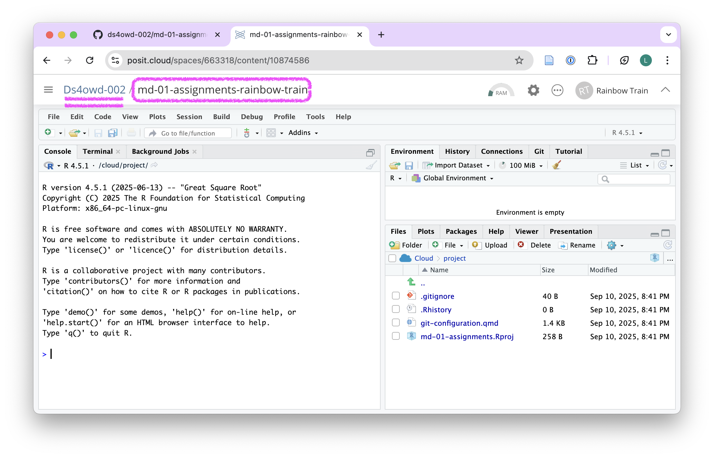
- Open the git-configuration.qmd file from the bottom right window of RStudio by clicking on the file name in the Files pane. The file opens in the Source pane in the top-left window of RStudio.
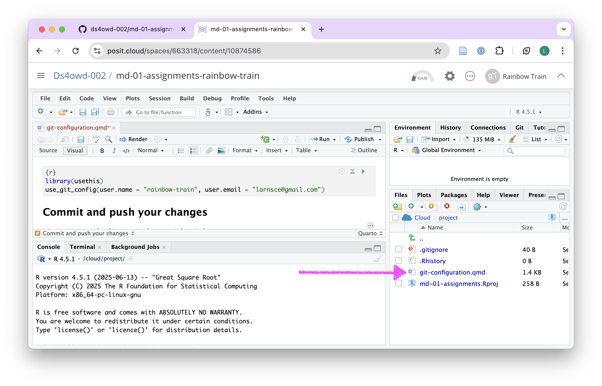
- Under the heading Git configuration edit the code in the code chunk:
- Replace the placeholder Your Name with your GitHub username
- Replace Your Email with your email address
- Keep the quotes!
These will be the details that git will use to identify you when you make changes to your work.
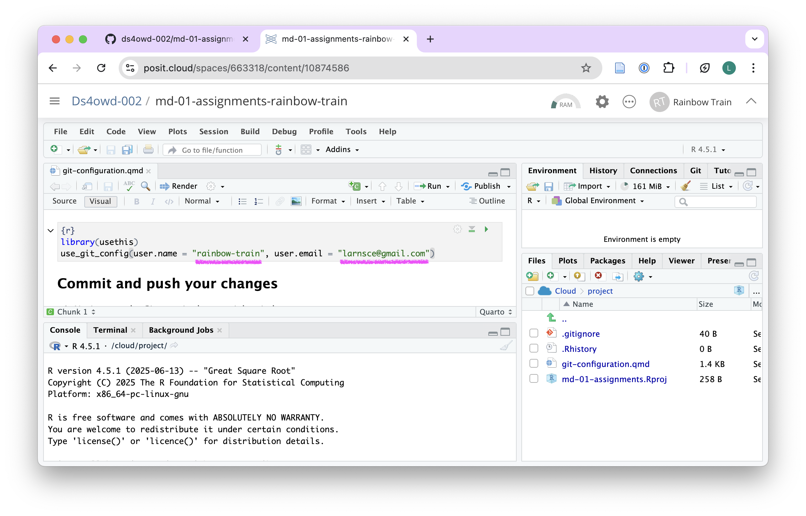
Save the file by clicking on the Save icon in the Source pane or by pressing
Ctrl + S(Windows/Linux) orCmd + S(Mac).Render the document by clicking the Render button in the Source pane.
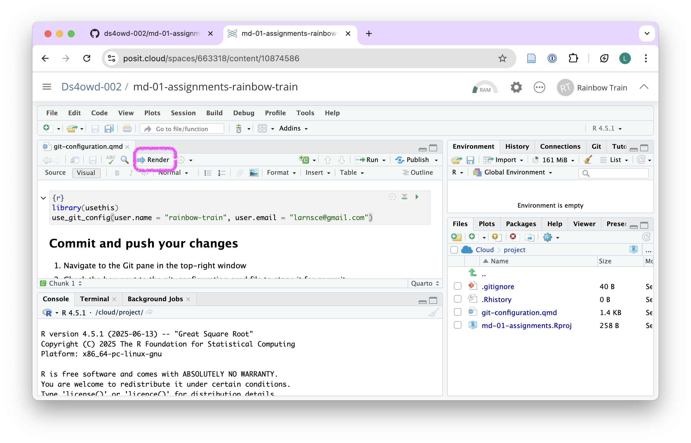
After rendering, a new browser tab will open showing the rendered output document. If your browser blocks it with a pop-up blocker, allow pop-ups for Posit Cloud and try again. You can close the new tab once you have seen the output; it is not needed for the rest of the assignment.
- Continue with the next step.
Step 2: Commit and push your changes
- Navigate to the Git pane in the top-right window of RStudio.
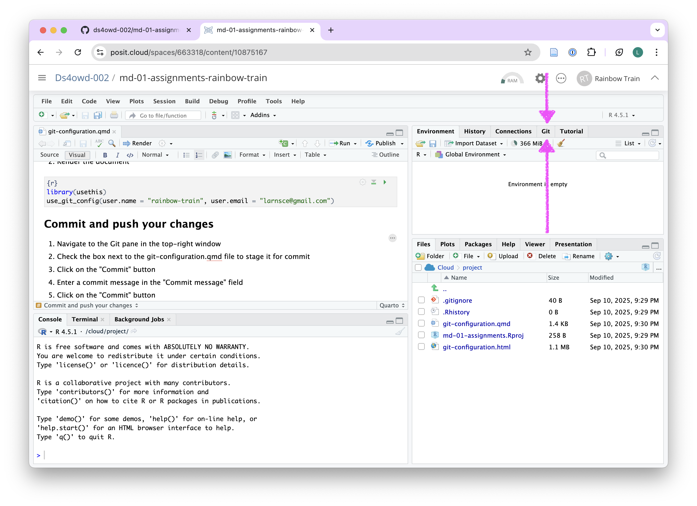
- Check the box next to the git-configuration.qmd file to stage it for commit.
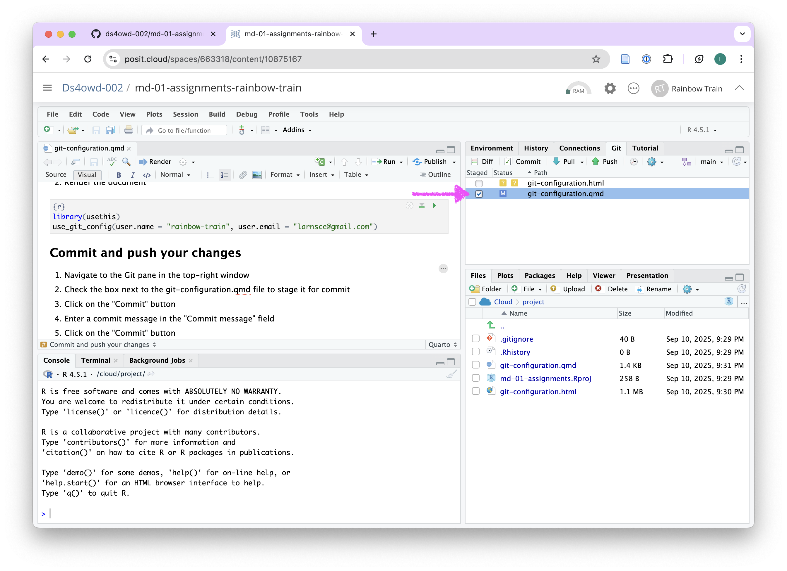
- Click on the Commit button. A new window opens.
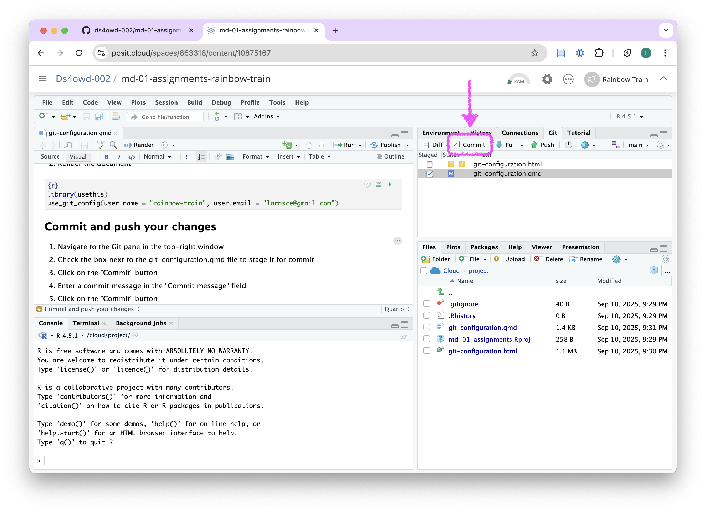
- Enter a commit message in the Commit message field in the top right corner. For example: replaced placeholders with my details.
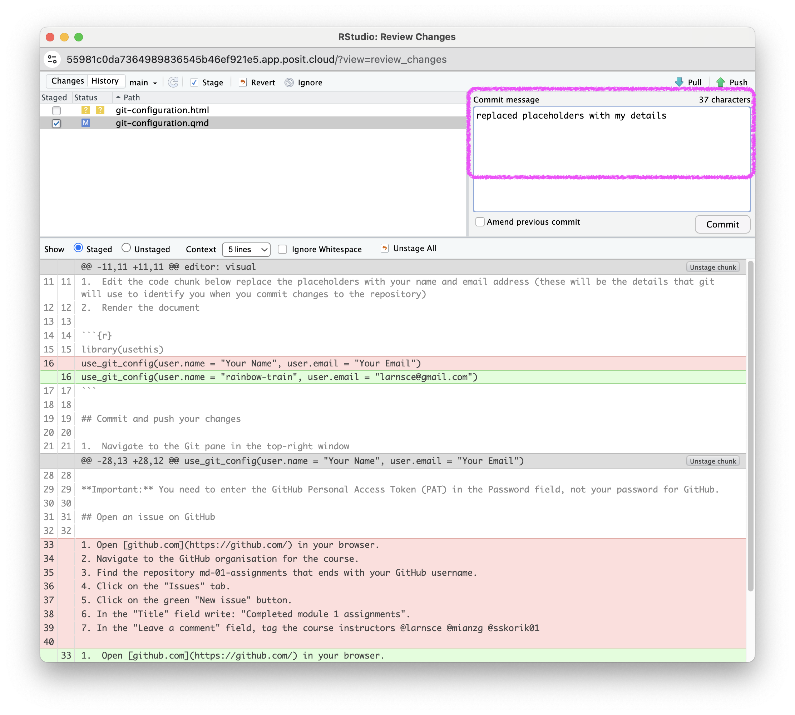
- Click on the Commit button.
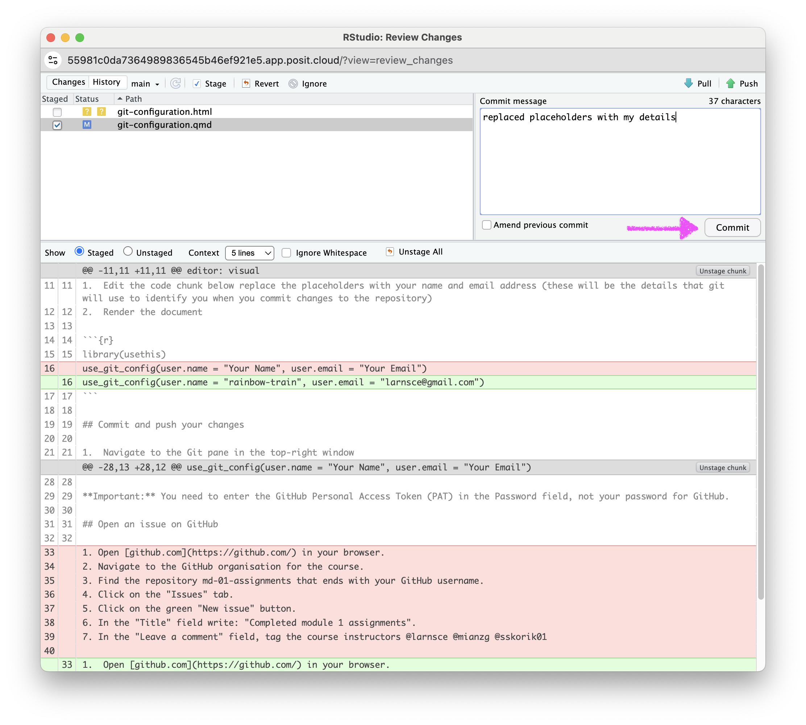
- If you see a message similar to the screenshot, you have successfully committed your changes to the local repository. Click on Close. If you do not see this message, make sure you have staged the file (checked the box next to it) for commit and entered a commit message.
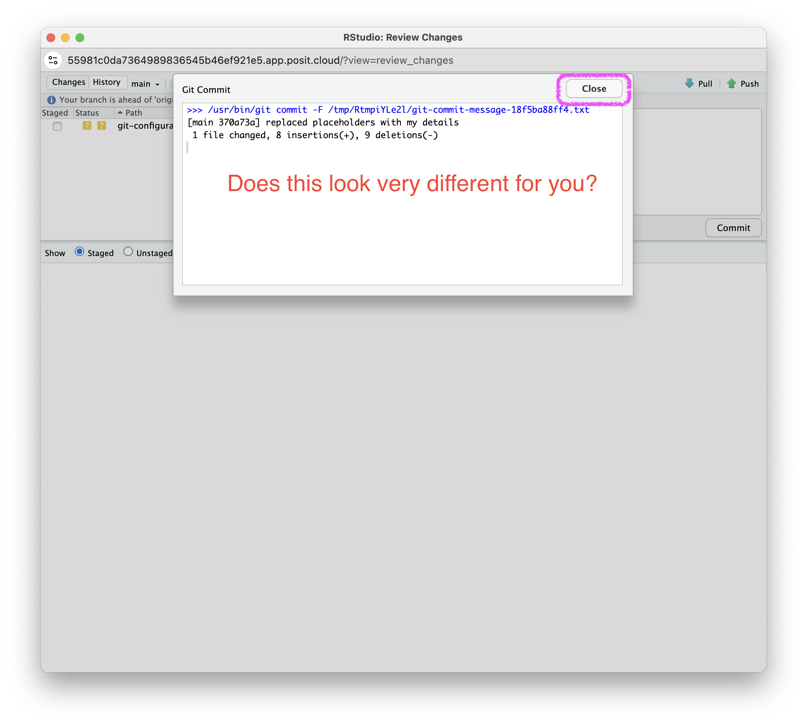
- Click on the Push button in the top right corner.
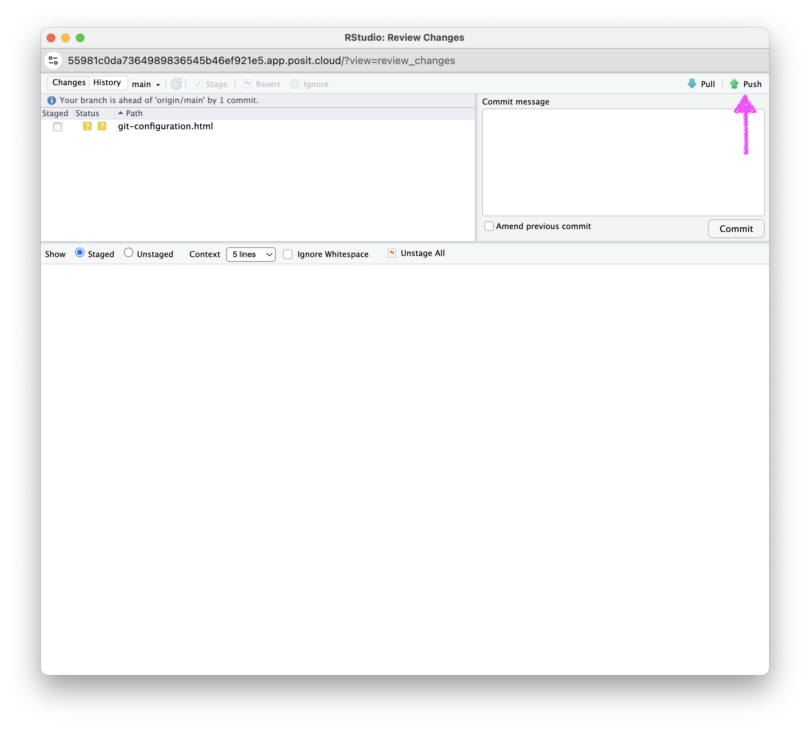
- Enter your GitHub username and click OK.
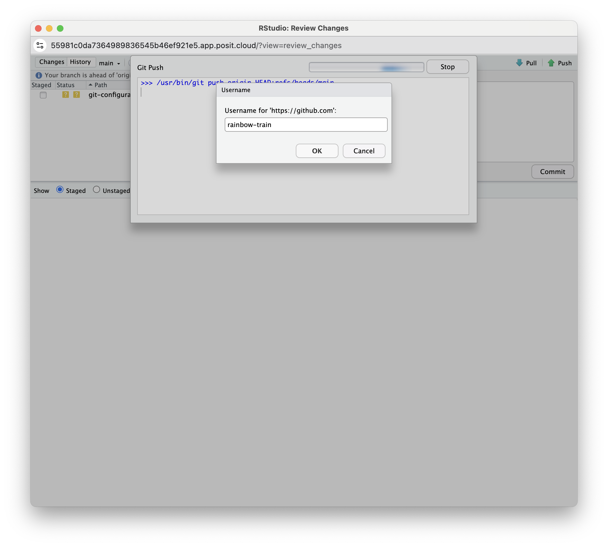
- Enter your GitHub Personal Access Token (PAT) in the field and click OK. This is the personal access token you created in Assignment 4.
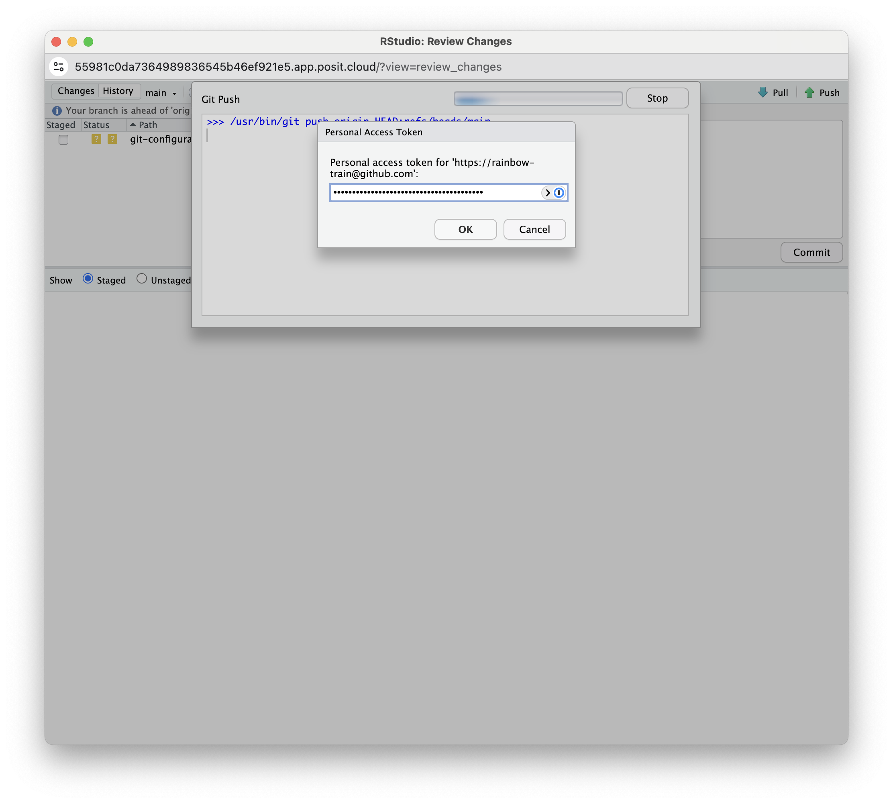
If you see a message that says HEAD -> main, then you have successfully pushed your changes to the remote repository on GitHub. Click Close. If you do not see this message, make sure you have entered your GitHub username and GitHub PAT correctly.
If you have stored your PAT in a Word file, a blank space might have been copied along with the PAT. We recommend using a TXT file (Notepad on Windows or TextEdit on Mac) or a password manager to store your PAT securely.
You have now completed the GitHub workflow for Module 2.